LuminaLumina is a minimal desktop web browser built on Electron and TypeScript. It blocks ads and trackers, pins your AI tools in a side panel, and hands the whole window to a game when you want it.
Free and open source under the MIT licence. No account, no telemetry, no auto-update phoning home.
Four things that are not standard in a browser this small.
On by default, from a list bundled with the app rather than downloaded — so it works offline, on first launch, and without telling a third party what you browse. A shield in the toolbar counts what was stopped and who it belonged to.
Gemini, ChatGPT and Claude pinned to an icon rail down the window's edge, each keeping its own live view so switching away never reloads the conversation. Pin any page, drag to reorder.
⇧⌘G hands the entire window to the page: no tab strip, no toolbar, fullscreen, display sleep suspended and background throttling off. On cloud gaming services, Esc reaches the game's own menu instead of dropping you out.
A clock you can drag anywhere with three faces, weather, quick links, a to-do list, and your own photo behind it all.
The builds are unsigned, so your system will warn about them. Code signing needs a paid Apple Developer membership and a Windows certificate, which this project does not have. The app is neither damaged nor malicious — every unsigned app is treated this way.
macOS: right-click the app and choose Open, or clear the flag with xattr -d com.apple.quarantine /Applications/Lumina.app. Windows: SmartScreen → More info → Run anyway.
The Windows and Linux builds are untested. They are built and packaged automatically, but nobody has yet run one. macOS is the platform that has actually been used. If a build misbehaves, open an issue.
If you would rather trust nothing, build it from source — an app you compile yourself is never quarantined.
Electron and TypeScript, wrapping Chromium rather than implementing a rendering engine — so real sites render exactly as they do in Chrome. Around 180 unit tests, a hand-written blocklist, and no third-party analytics of any kind.